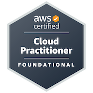

Experience & Education
Cloud & DevOps journey, roles, and academic background.
Professional Summary
Recent B.Tech (AI & ML) graduate from VIT Chennai and DevOps-focused cloud engineer with hands-on experience building and automating AWS deployments. Implemented S3/CloudFront static hosting, Dockerized Python apps on EC2 behind Nginx, and created GitHub Actions CI/CD pipelines; used Terraform and Ansible for infrastructure-as-code and Prometheus/Grafana for observability. Strong Python and Linux skills with a focus on automation, reliability, and scalable systems.
Experience
Cloud Computing Intern — Corizo EduTech Private Ltd.
Chennai • May 2025 – July 2025
- Gained practical exposure to core AWS services like EC2, S3, IAM, and VPC.
- Worked on deploying and managing cloud infrastructure using AWS.
- Gained hands-on experience with DevOps tools and Linux command line.
- Collaborated on mini-projects simulating real-world cloud environments.
Education
VIT University
B.Tech/B.E. in CSE, Specialization in AI & ML • May 2025
Sri Chaitanya Junior College
Intermediate Education in MPC • May 2020
D.A.V. Public School
High School Diploma • April 2018
Certifications
-
AWS Certified Cloud Practitioner

Hobbies & Interests
- Learning new DevOps tools and trends.
- Reading tech blogs and trying new tech products.
- Playing violin and growing plants.